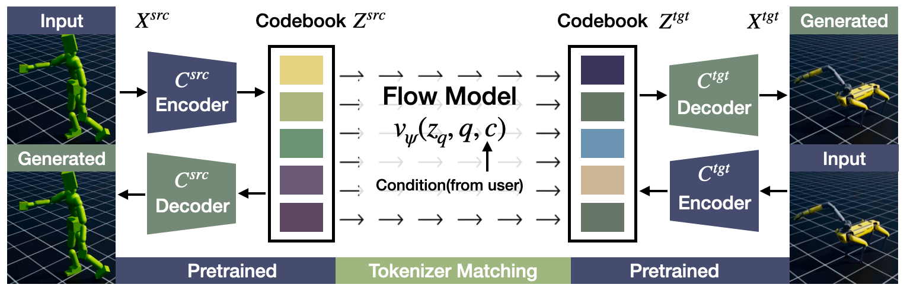

MoReFlow: Motion Retargeting Learning through Unsupervised Flow Matching
Abstract
Motion retargeting holds a premise of offering a larger set of motion data for characters and robots with different morphologies. Many prior works have approached this problem via either handcrafted constraints or paired motion datasets, limiting their applicability to humanoid characters or narrow behaviors such as locomotion. Moreover, they often assume a fixed notion of retargeting, overlooking domain-specific objectives like style preservation in animation or task-space alignment in robotics. In this work, we propose MoReFlow, Motion Retargeting via Flow Matching, an unsupervised framework that learns correspondences between characters' motion embedding spaces. Our method consists of two stages. First, we train tokenized motion embeddings for each character using a VQ-VAE, yielding compact latent representations. Then, we employ flow matching with conditional coupling to align the latent spaces across characters, which simultaneously learns conditioned and unconditioned matching to achieve robust but flexible retargeting. Once trained, MoReFlow enables flexible and reversible retargeting without requiring paired data. Experiments demonstrate that MoReFlow produces high-quality motions across diverse characters and tasks, offering improved controllability, generalization, and motion realism compared to the baselines.
Learning Framework
Overview of the proposed MoReFlow framework. Each character (Csrc and Ctgt) has a pretrained VQ-VAE tokenizer consisting of an encoder, a decoder, and a codebook. A source motion is first encoded and quantized into tokens from the source codebook. The flow matching model then maps the token distribution from the source codebook to the target codebook, optionally conditioned on task requirements, such as local style alignment or world-frame alignment. The retargeted motion is reconstructed using the pretrained target decoder.
BibTeX
@article{kim2025moreflow,
title={MoReFlow: Motion Retargeting Learning through Unsupervised Flow Matching},
author={Wontaek Kim and Tianyu Li and Sehoon Ha},
journal={arXiv},
year={2025},
}